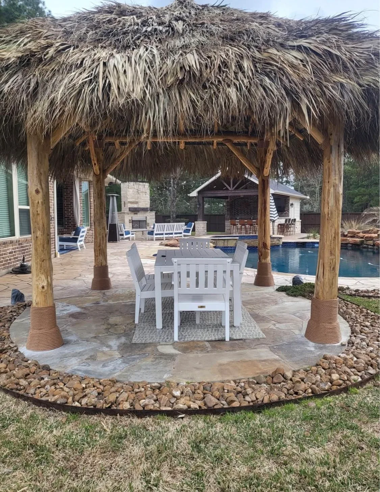
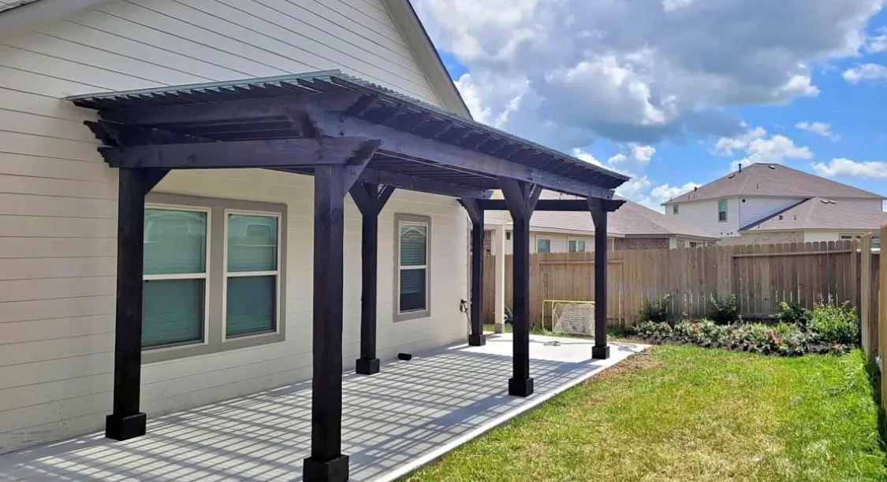

Add Structure, Shade & Style to Your Backyard
Custom Pergola Installation in Houston, TX
- Wood, Aluminum & Louvered Options
- Wind-Rated Footings
- Free In-Home Design
Greater Houston's Trusted Pergola Contractor
A custom pergola is one of the best ways to enhance your outdoor living space by adding architectural beauty, functional shade, and lasting value to your home. Whether it's creating a relaxing backyard retreat, defining an outdoor dining area, or enhancing your poolside oasis, a custom pergola brings style and purpose to any outdoor space.
At Longhorn Hardscape & Construction, we design and build custom wood pergolas, cedar pergolas, aluminum pergolas, and motorized louvered pergolas for homeowners throughout Greater Houston, Missouri City, Sugar Land, Katy, and Pearland. Every pergola is custom designed to complement your home's architecture, maximize your outdoor living space, and withstand the Texas climate.
From your complimentary in-home consultation through final installation, our team is committed to delivering exceptional craftsmanship, premium materials, and a pergola you'll enjoy for years to come.

Pergolas Options We Build in Houston
Wood Pergolas
Cedar, redwood, and treated pine pergolas with classic charm — stainable, paintable, and naturally beautiful.
Aluminum Pergolas
Powder-coated aluminum that never rots, warps, or needs painting — the best low-maintenance option for Houston's climate.
Louvered Pergolas
Motorized or manual adjustable louvers let you control sunlight and airflow with precision — open, close, or tilt on demand.
Attached Pergolas
Built onto your home for a seamless extension of your indoor living space into the backyard.
Freestanding Pergolas
Standalone structures positioned anywhere — over a pool deck, fire pit, or garden path.
Pergola with Roof
Fully covered pergola tops with polycarbonate, metal, or shingle roofing for complete rain and sun protection.
Why Choose Longhorn for Your Houston Pergolas
Designed Around Your Home
We proportion beam height, width, and spacing to your home's roofline and architecture — not a catalog dimension that looks generic against your façade.
Wind-Rated Footings
Houston storms are not optional weather. Every pergola post is set in concrete footings sized and anchored for local wind load requirements — not just aesthetic posts in gravel.
Louvered, Lattice & Solid Roof
Adjustable louvered systems, classic cedar lattice, polycarbonate roofing, or clean open-beam designs — we build the shade solution your lifestyle actually calls for.
Fan & Lighting Pre-Wired
We rough-in electrical for ceiling fans and string lights during installation — not as an afterthought. Anchor points for climbing vines are included if you want that natural canopy look.
Pergolas Areas We Serve
We serve Greater Houston and surrounding Fort Bend County communities.
Pergolas FAQs — Houston
Attached pergolas typically require a building permit in Houston. Freestanding pergolas under certain dimensions may not. Permit requirements depend on your specific project — we'll advise you during your free consultation.
A pergola has an open or slatted roof that filters light, while a patio cover has a solid roof that blocks sun and rain entirely. Louvered pergolas bridge both worlds with adjustable panels.
Absolutely. We can integrate recessed lighting, ceiling fans, outdoor curtains, and even retractable screens into your pergola design for maximum comfort.
Pergola Projects in Houston, TX
Custom pergola installations designed for outdoor entertaining across Greater Houston.





Ready for a Free Pergolas Estimate?
Walk us around your backyard — we'll design the pergola on-site and hand you a written price before we leave.